When working with Categories, you will need to create your own structure. You may create:
Creating a Static CategoryTo create a Static Category, open the Categories toolwindow: View>Other Tool Windows>Categories 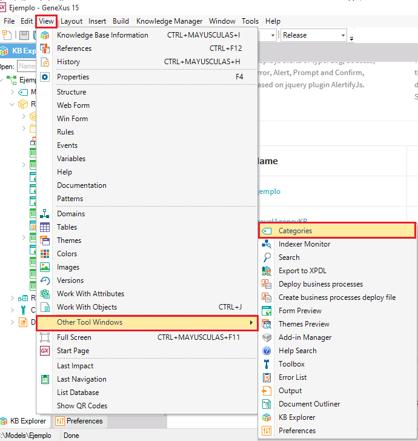 The Categories window will open to the right of the IDE (where the Properties window is opened). Select an existing category in which you want to create a new one, and right-click on it: 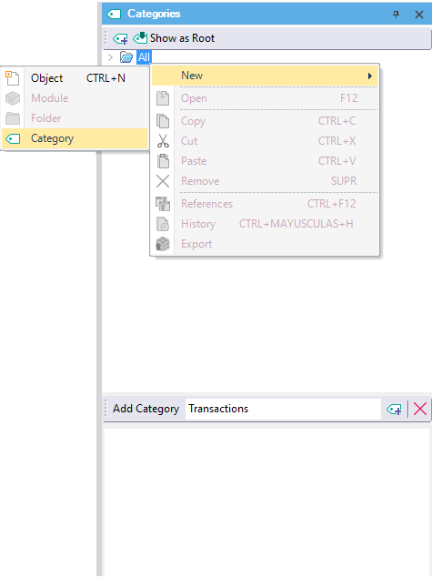 You can also use the Add Category field and buttons: 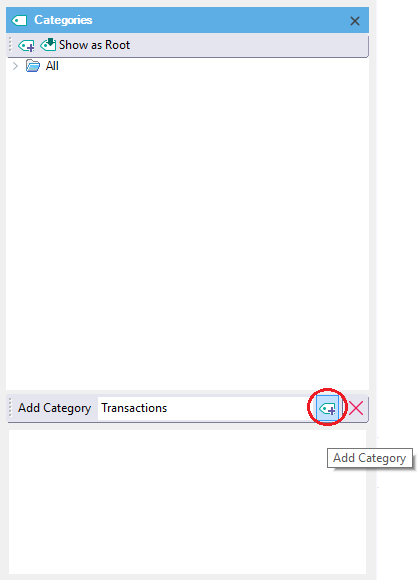 In this way you can easily create your Category tree. Creating a Dynamic CategoryYou can create a Dynamic Category through the Search window and also through the Categories toolwindow. Let's look at both options. Creating a Dynamic Category through the Search windowGeneXus provides a powerful search engine that allows you to quickly find anything in your Knowledge Base. You can search for any given text or even for specific property values (anything having property X with value Y). See more in Full Text Search Display the Search window by:
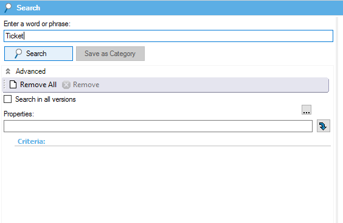 Results will be shown on the right: 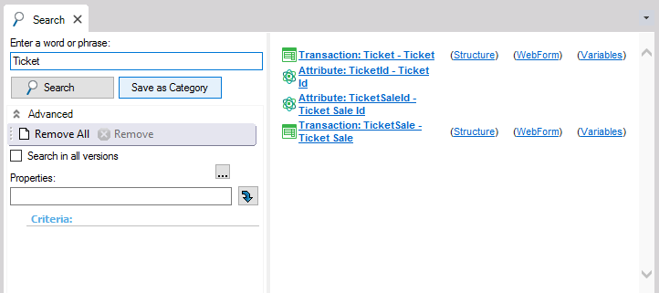 If there is a result, the Save as Category button will be enabled, as shown in the following image: 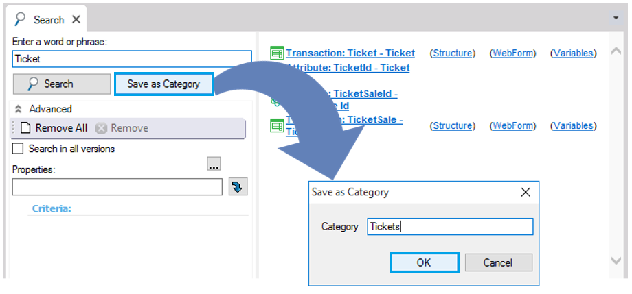 You can use this option to create a new Category only if the Search action returns a result for the word or phrase you entered. Lastly, press the Ok button to create the Category. This type of category is known as a Dynamic Category, where the category content is automatically loaded with the objects that always match the search criteria. Creating a Dynamic Category through the Categories WindowYou can also create a Dynamic Category in the same way you create a Static Category. All you have to do is specify some Query and/or Properties in the Category Properties window. Select a category and press f4 to open the Properties window. For example, look at the following image: 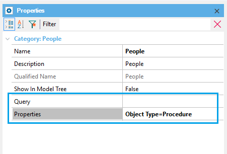 Dynamic Category Examples1.Using Search Window CriteriaAs we said, this type of Category automatically loads its content with the objects matching the search criteria. So, you can look for all your Transaction objects, and then create a Dynamic Category named Transactions. All your transaction objects will belong to it.
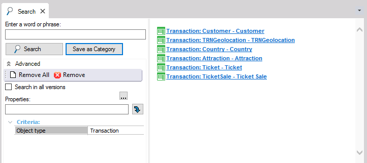
All transaction objects automatically belong to the Transactions category: 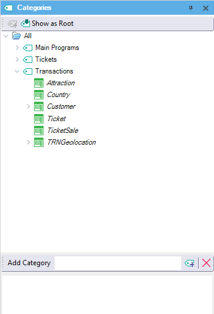 In this way you can create your "object views" based on object types. 2. Information FlowSuppose that:
Look at the following image: 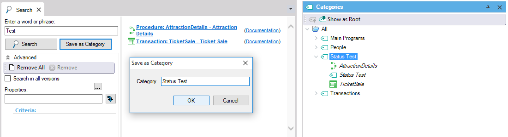 When the documentation status of the Ticket transaction is modified (Development changed to Test), the Category View displayed is: 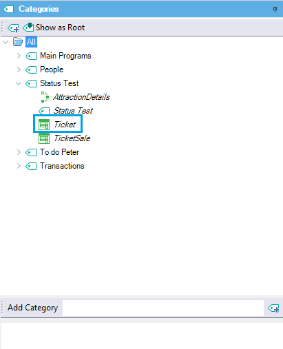 See Also
|
| Backlinks |
| Working with Categories |